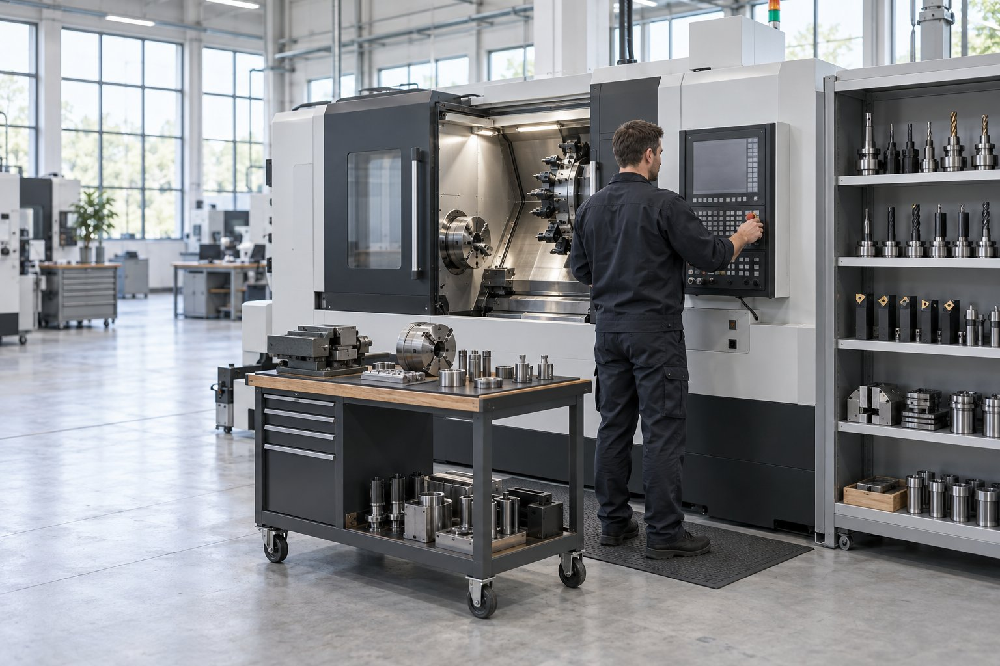
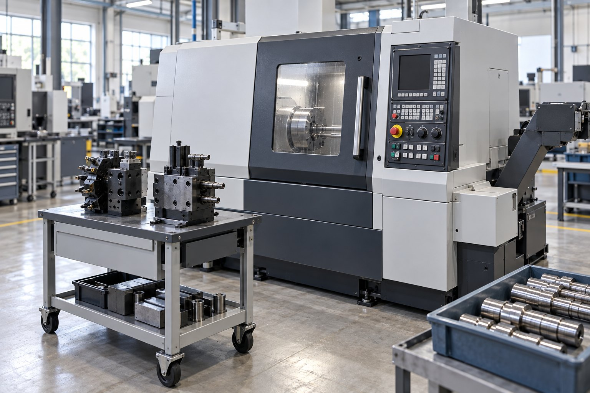

Комплексное оснащение участка
Станок, инструмент, оснастка и запуск — одним проектом. Подбираем оборудование под вашу деталь и сразу комплектуем его всем, что нужно для работы на вашей номенклатуре.
Типовые участки
Что входит в поставку и какие детали обрабатывают на каждом участке.

Токарный станок с инструментом и оснасткой под детали вращения
Что входит
Типовые детали
Типовые составы под тип деталей
Состав считается от номенклатуры и программы выпуска: один и тот же станок под разные детали комплектуется по-разному. На этом же шаге считаем стоимость обработки детали по всему маршруту.
| Тип деталей | Основа участка | Что добавляем |
|---|---|---|
| Тела вращения, прутковая обработка | Токарный центр с приводным инструментом | Цанговый зажим, приводные блоки; опции станка — барфидер, ловитель детали, конвейер стружки |
| Корпусные детали | Вертикальный или горизонтальный обрабатывающий центр | Тиски и приспособления, оправки; опции станка — щуп, подача СОЖ через шпиндель |
| Сложные пространственные детали | Пятиосевой обрабатывающий центр | Термо- и гидропластовые оправки, короткие вылеты, зажим с доступом к пяти сторонам |
| Валы и длинномерные детали | Токарный станок с люнетом, при необходимости шлифовальный | Люнеты, вращающиеся центры, инструмент под нежёсткую деталь |
| Закалённые детали | Шлифовальный станок или твёрдое точение | Инструмент CBN, шлифовальные круги, жёсткий зажим |
| Листовые заготовки | Лазерная или гидроабразивная резка | Раскрой под последующую мехобработку и припуски |
Станок
Тип, рабочая зона, мощность, оси — от детали и программы выпуска. Опции сразу: барфидер, конвейер стружки, щуп, СОЖ через шпиндель.
Оснастка и зажим
Патроны, оправки, тиски, приспособления и быстрая переналадка под маршрут.
Инструмент и режимы
Инструментальная карта под деталь с посчитанными режимами, стойкостью и стоимостью обработки.
Запуск и сервис
Пусконаладка на вашей детали, обучение операторов и наладчиков, регламент обслуживания и расходники.
Частые вопросы
Комплексная поставка — способ снять стыковку между поставщиками, а не обязательное условие. Если станок уже есть, подбираем инструмент и оснастку под него.
Да, состав оборудования и оснащения формируется под конкретную деталь, материал и объём выпуска.
Да, поставка сопровождается пусконаладкой и обучением операторов и технологов.
Да, к работающему участку можно добавить станок, а под новые детали — подобрать инструмент и оснастку.
Да. Комплексная поставка — это способ снять стыковку между поставщиками, а не обязательное условие. Если станок уже есть, подбираем инструмент и оснастку под него.
С детали и программы выпуска. Нужны чертежи или 3D, марки материалов, партии и требуемый выпуск. От этого считается маршрут, а от маршрута — состав оборудования и оснастки.
Опишите производство — получите состав участка
Пришлите деталь, материал, партию и требования к точности — подберём станок, инструмент и оснастку и посчитаем стоимость обработки.